Como especialista em beleza, tenho o prazer de oferecer uma gama de serviços para realçar sua aparência e elevar sua confiança. Meu foco principal está no design de sobrancelhas, onde trabalho para esculpir a forma perfeita que se harmoniza com seus traços faciais únicos. Além disso, ofereço a técnica de rena nas sobrancelhas, adicionando cor e definição para um olhar ainda mais marcante e expressivo.
Além disso, realizo depilação corporal profissional, utilizando métodos seguros e eficazes para remover os pelos de forma suave e duradoura. Meu objetivo é proporcionar a você uma experiência relaxante e satisfatória, deixando-o(a) com uma sensação de renovação e confiança em sua própria pele.
Venha desfrutar de um tratamento personalizado e descubra o poder transformador de uma aparência cuidadosamente trabalhada.
Veja alguns procedimentos que foram realizados:
Dicas e cuidados
Sobrancelhas
Formato adequado ao rosto: O primeiro passo é encontrar o formato de sobrancelha que melhor se adapte ao seu rosto.
Manutenção regular: Mantenha as sobrancelhas sempre bem cuidadas, removendo os pelos indesejados ao redor para manter o formato desejado.
Visita ao profissional: Se não se sente seguro em moldar suas sobrancelhas, considere uma visita a um profissional. Eles podem ajudar a definir o melhor formato e realizar a manutenção de forma mais precisa.

Em caso de Henna
Opte por uma tonalidade que combine bem com a cor do seu cabelo e da sua pele.
Para prolongar a cor da henna, evite esfregar as sobrancelhas ao lavar o rosto e aplique protetor solar ao redor da área para evitar desbotamento.
Depilação
Após a depilação com cera, é importante cuidar da pele para minimizar irritações e manter uma boa saúde da pele, após a depilação, limpe a área delicadamente com água morna e um sabonete suave.
Hidrate a pele e evite usar produtos que contenham álcool, evite a exposição direta ao sol por pelo menos 24 horas após a depilação.
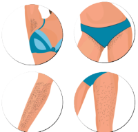


 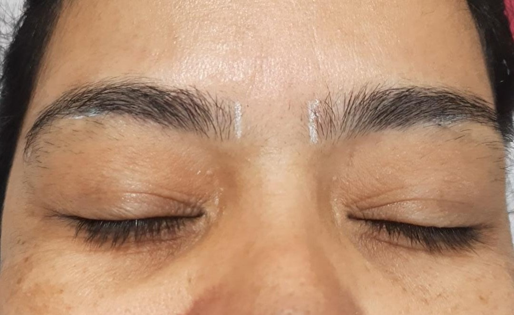
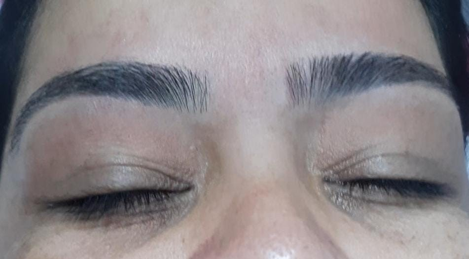
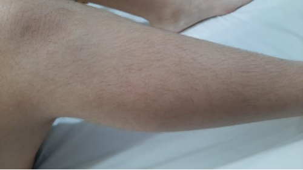
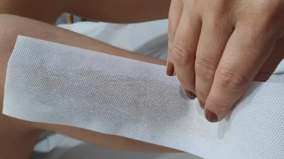
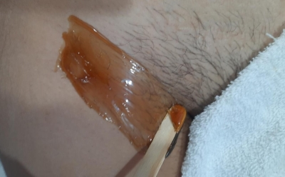
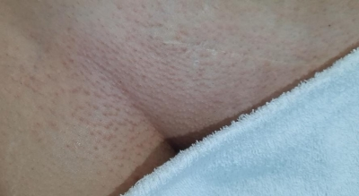
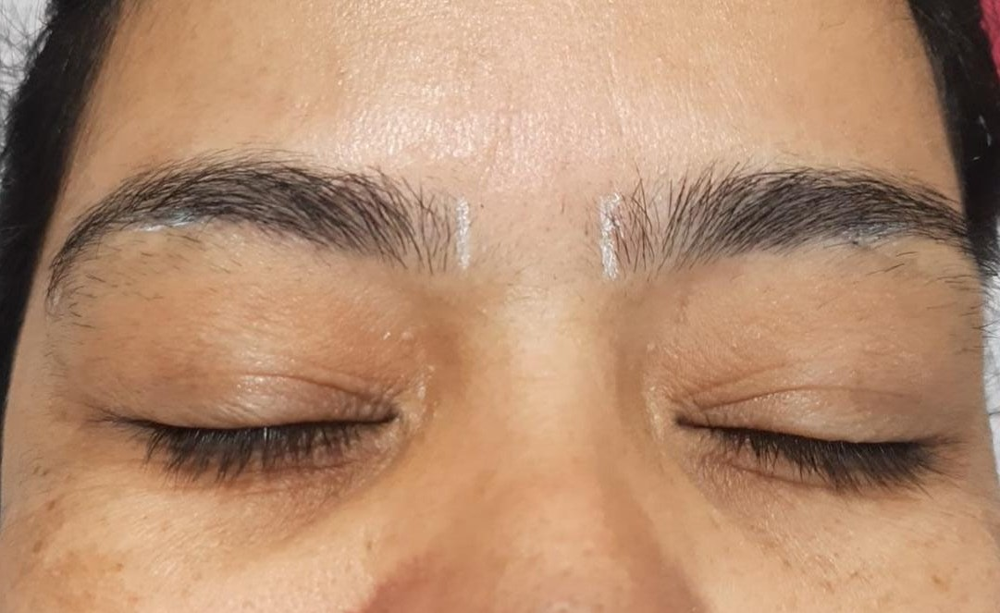
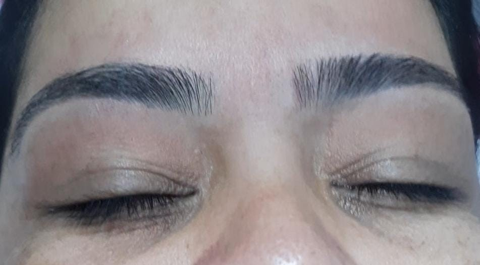
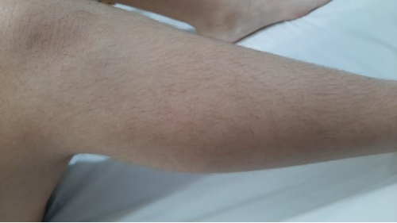
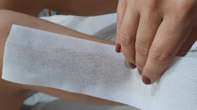
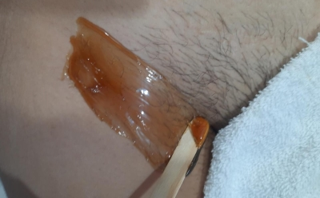
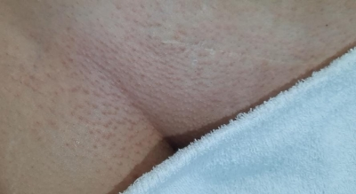